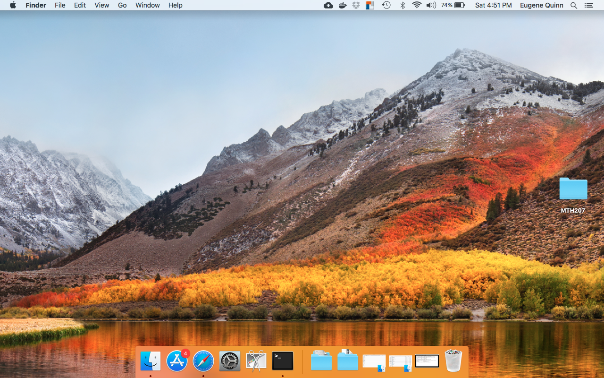
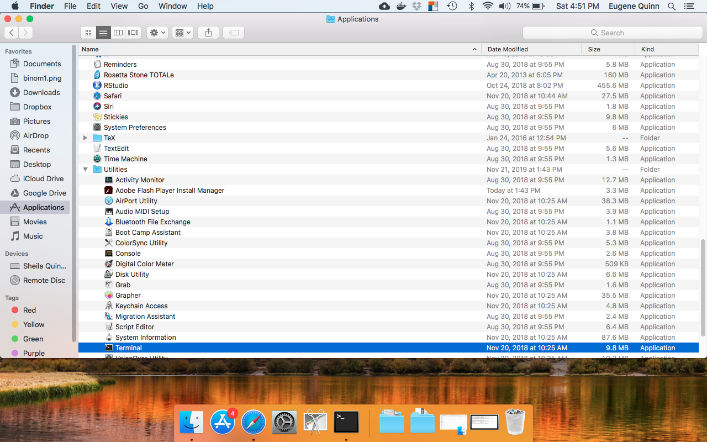
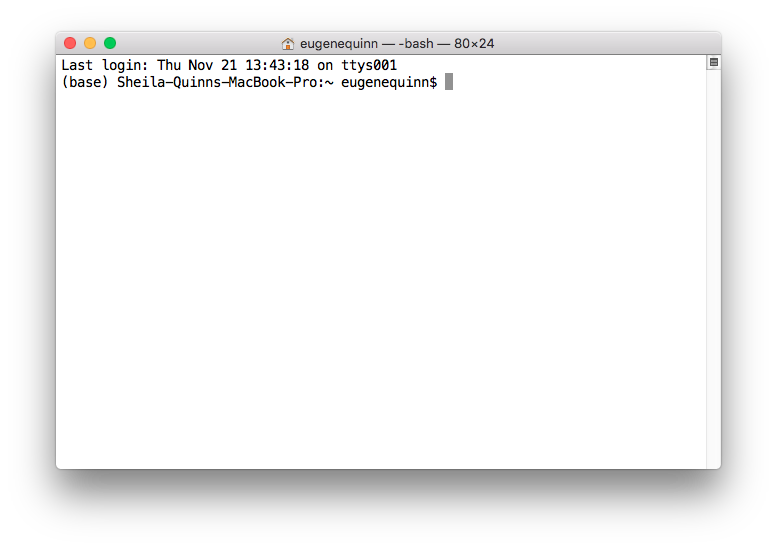
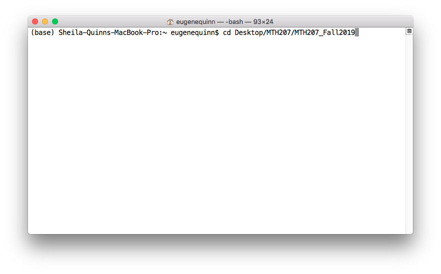
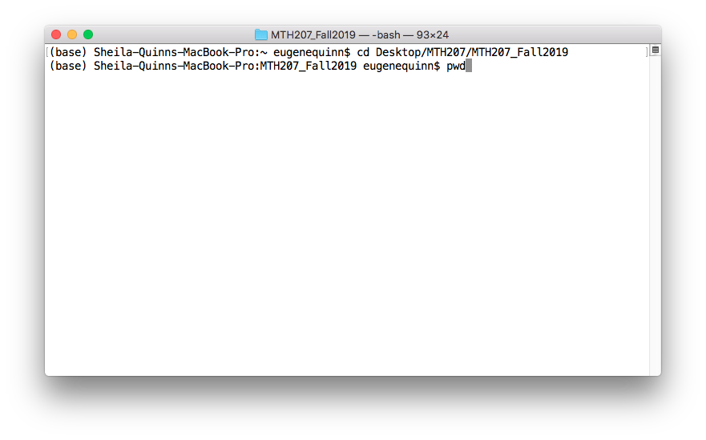
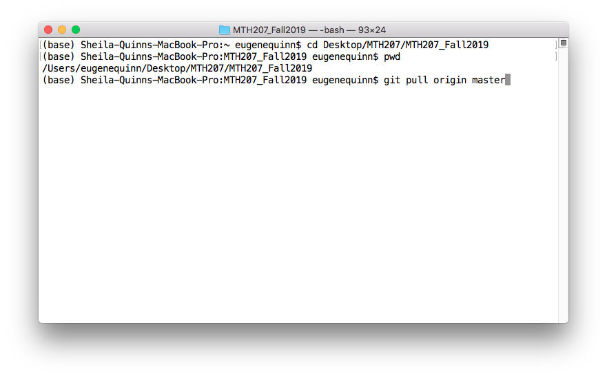
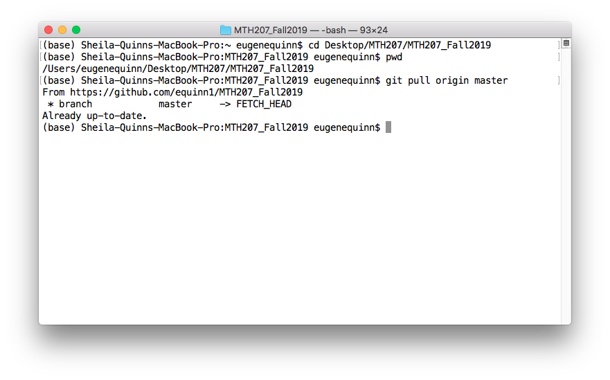

Start Finder
|  |
In the Applications tab, expand the Utilities folder and select Terminal
|  |
This will open a terminal window:
|  |
Enter the following command to change to the github clone directory: cd Desktop/MTH207/MTH207_Fall2019
|  |
Enter the pwd command to verify that we are in the correct directory:
|  |
Now enter the pull command to synchronize your copy with the github server:git pull origin master
|  |
The pull command will copy any new or changed files from the server to your computer.
If there are none, it will say that your copy is up to date.
|  |